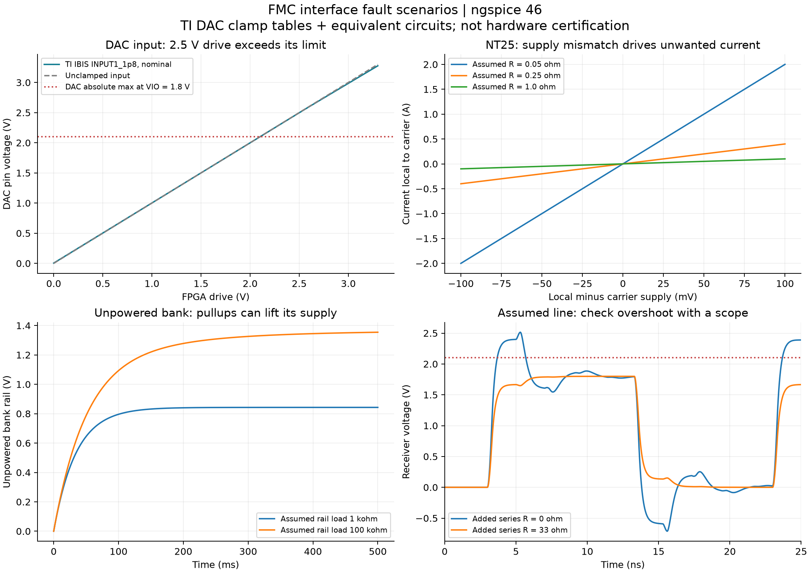

KC705 J2 LPC: electrical audit and pre-connection tests
CaravelReRAM-SenseEval v1.2F | 18 October 2026 | 21 executed ngspice cases
Confirmed by user on18 October: USB-C power; R14 fitted with 0 ohm; NT12 fitted; NT22 open. Thus VDDA1 is supplied by the local3.3 V LDO, and the boost output is connected to local+12 V loads. NT25 was described as “as in PCB files”: the board has its0603 footprint and connection, but the production BOM omits it, so actual population is unresolved. For USB-C power, NT25 must be open before mating. Verify both R63 locations and U20's actual marking. PCB connectivity takes precedence over the PDF where they differ.
J2 is pin-compatible; corrections and validation are required
The PCB uses an LPC connector with C/D/G/H contacts. All 36 connected ordinary signals map through KC705 J2 to HR bank 12. J22 would map this same subset to HR bank 16, with the same VADJ constraints; it does not solve these problems. This report uses only J2 pin assignments. Connector orientation, board clearance and mechanical seating still require inspection.
Architecture retaining native FPGA LVDS clocking: J2 bank 12 at 2.5 V, with the affected card I/O domains corrected to 2.5 V or properly translated. This retains native HR-bank LVDS_25 clock output and receive termination. Do not change the ADC's1.8 V supply to 2.5 V. Updated 1.8 V alternative: the existing input-clock hardware can be tested with D8 driven by a 50 MHz LVCMOS18 clock and D9 actively driven LOW, both ordinary CMOS outputs, ADC DIFF_CLK=1, and C60/C61/R165 retained. An external clock driver is not necessarily required. Seven external receiver-end100 ohm terminations and the remaining interface corrections are still required. See the 225-case follow-up clock simulation, including its startup and model limitations. Neither architecture is hardware-qualified. The2.5 V source, tolerance budget, isolation and enable sequence still need design review; never parallel a local2.5 V regulator with KC705 VADJ.
- DAC branch: isolate U1 VIO pin 9, its bypass C1 and the R1-R8 pullup supply branch from+1V8 A, then supply that branch at 2.5 V. Do not leave the toggle/clear/reset controls with marginal1.8 V highs. DAC VIO supports 1.7-5.5 V. Leave U16 and ADC LVDD on1.8 V. Exact cuts/jumpers must be checked on the physical board before rework.
- TXS branch: isolate U17 pin 2 and its bypass supply from+1V8; use2.5 V on VCCA while retaining3.3 V VCCB. TXS permits this voltage combination. Replace R52's pullup function with a pulldown so OE defaults LOW, and supervise its release. Do not join the whole+1V8 rail to VADJ.
- TXS logic margin: supported supplies are not sufficient proof of interface margin. At VCCA 2.5 V, the TXS A-port requires VIH>=2.1 V and VIL<=0.15V. Kintex LVCMOS25's guaranteed VOH=VCCO-0.4V/VOL<=0.4V at its stated test currents do not by themselves establish these margins, especially LOW. Evaluate loaded output levels and rail tracking across the intended conditions; if guaranteed margins cannot be established, use suitable direction-controlled translators with compatible input thresholds. A room-temperature scope trace alone is not a worst-case guarantee.
- Other CMOS: address ADC CS pullup R49, currently to+1V8; a2.5 V high otherwise injects roughly70 uA through 10k toward that rail. Do not move it blindly to an always-on rail that can drive an unpowered ADC. Re-reference/remove it with a verified startup default. For U20, establish a2.5 V output domain using the correct part, or physically isolate/omit U20 and use KC705's local clock. Ignoring H19 in firmware alone does not stop it driving an unpowered FPGA.
- Supply sequence remains a separate requirement. A2.5 V voltage plan solves steady-state levels only. Use an appropriately sequenced I/O supply or fail-safe, enable-controlled isolation, so local pullups and carrier outputs cannot drive unpowered receivers. Scope both power-on and power-off. No default assumption about carrier-first or card-first startup is sufficient.
What cannot work as-is: bank 12 cannot simultaneously provide native LVDS_25 outputs requiring2.5 V and LVCMOS18 outputs requiring1.8 V. Different XDC values cannot split one physical bank supply. With VADJ 1.8 V, LVDS_25 input-only use is permitted subject to input limits, external100 ohm receiver termination and DIFF_TERM=FALSE; native LVDS_25 output is not.
Primary references: KC705 UG810, tables 1-3/1-29 and p75; UG471 pp91-93; DAC81416; TXS0108E.
Issue-by-issue disposition
| Issue | Evidence | Possible remedy | What does not solve it |
|---|---|---|---|
| DAC controls at 2.5 V into VIO 1.8 V | G12/G13/H13/H14/H20 directly reach U1.12/13/14/18/19. Nominal absolute input ceiling2.1 V. | Hardware: selectively re-reference DAC VIO and relevant pullups to 2.5 V, or use suitable level translation. Verify power states. | Cannot fix with XDC, reduced clock rate or a series resistor alone. |
| TXS interface voltage / default enable | U17 VCCA=1.8 V, VCCB=3.3 V; R52 pulls OE high. | For2.5 V architecture, selectively move VCCA and OE domain to 2.5 V; make OE default LOW and enable only after valid supplies. | Firmware after configuration alone cannot control the earlier power ramp. |
| Parallel3.3 V sources | NT25: J2 C39 -> local U6 output. | Keep NT25 open for independent5 V-powered PCB; confirm no other source ties. | Do not parallel regulators or assume equal nominal voltage makes it safe. |
| Management I2C mismatch and U18 bias | C30/C31 are KC7053.3 V management I2C. Card pulls them to 1.8 V via R54/R53; U18 pin 7 directly3.3 V. | Initially isolate U18 plusR53/R54. Permanent solution must fix reference bias, pullups and power-off isolation together. | VADJ or GPIO constraints cannot change the management bus domain. |
| VDDA1 source conflict | Actual PCB: NT12 +3V3->vdda1, NT22 DACOUT14->vdda1. | Fit only selected source link. Verify actual assembly. | DAC programmed to 3.3 V does not make parallel source operation reliable. |
| FTDI/shared reset contention | SCAN_SI shares FT232H ADBUS2/RTS# path; RESET_B shares FTDI and ground switch. | Configure/isolate competing FTDI outputs; reset should use verified open-drain/tri-state ownership. | Unplugging USB does not isolate an FTDI still powered from the PCB. |
| U20 mismatch / weak clock high | PDF names AUP1T34; PCB valueLVC1G125 has /OE(pin 1) tied3.3 V, so would be disabled. Output domain presently1.8 V. | Identify fitted device. Correct translation to bank domain, or do not use H19 and use KC705 local clock. | H19/AC24 is not a dedicated clock-capable pin; constraints do not change its physical routing. |
| Sparse FMC signal returns | Only7 standard GND contacts connected; many grounds near active high-speed pairs are unconnected. C32 is GND but card has10k to 3.3 V. | Review/improve ground connection at connector, preferably board revision or engineered interposer; measure signal integrity. | No software or lumped SPICE fix can certify high-speed return paths. |
| ADC channels6-8 absent from FMC | OUT6/7/8 appear at J8, not J9. | Use suitable added differential wiring/interposer or revise PCB if all 8 required. | Cannot recover absent copper connections with an FPGA pin assignment. |
| DAC readback absent | U1 SDO pin 11 is unconnected. | Verify write commands by output measurements; add physical SDO route for digital readback. | Firmware cannot read an unconnected signal. |
| JTAG bypass | Bottom1206 R63 connectsD30-D31; presenceH2 is grounded. | Fit/verify bypass to maintain JTAG path with card present. | Missing bypass may look like a dead FPGA; not a voltage-protection mechanism. |
Permanent U18 repair: the KC705 C30/C31 bus is a3.3 V management bus, independent of VADJ. A possible PCA9306 equal-voltage switch arrangement references VREF1 pin 2 to 3.3 V, removes R53/R54's1.8 V pullups, replaces pin 7's direct3.3 V tie with the200k bias arrangement prescribed by TI, and controls EN independently so the bus disconnects during invalid power states. Use the exact datasheet switch circuit; changing only R56 is insufficient. For initial J2 tests, isolating U18 and R53/R54 is simpler. It disables access to the local Si5351 through FMC until repaired. See PCA9306, switch configuration and power recommendations.
Ground repair is not a blind jumper instruction: confirm standard GND contacts against J2 before adding bonds. H2 is presence and C34 is GA0; they are not substitute signal-return pins. Long flying ground wires do not recreate the short return paths needed for a high-speed connector.
What the SPICE runs establish
Executed21 DC/transient circuits in ngspice46, using KiCad10's shared library. Powered DAC cases use the actual TI INPUT1/INPUT2 IBIS clamp tables converted to behavioral current sources. RESET uses INPUT2; CS/LDAC use INPUT1 with their10k pullup, and a separate bare-input case represents SCLK/SDI. Other circuits are deliberately simplified sensitivity examples.
| Simulation | Result | Interpretation |
|---|---|---|
| TI input model, VIO 1.8 V, carrier drive 2.5 V | CS pin 2.4981 V; bare SCLK/SDI 2.4998 V; absolute ceiling2.10 V. | Fails voltage limit. Small clamp current is not protection. RESET nominal and three INPUT1 corners also fail. |
| Series resistor trial at 2.5 V | Extra33 ohm: 2.4956 V; extra 1 kohm: 2.4339 V. | Neither fixes the voltage mismatch; no value is recommended as a substitute for translation. |
| NT25 closed, hypothetical100 mV supply mismatch | 0.1 A /0.4 A /2 A with assumed1 ohm /0.25 ohm /0.05 ohm paths. | Sensitivity only; actual regulator reverse behavior unknown. Open-link case preserves independent3.3/3.4 V nodes, no direct bridge current. |
| I2C opposed pullups only | 4.7k to 3.3 V plus10k to 1.8 V: bus2.8204 V,102 uA/line into1.8 V. | Omits U18 and carrier mux; not a predicted complete-bus waveform. Confirms conflicting bias networks. |
| Simplified LVDS source into receiver load | 3.5 mA gives350 mV differential with 100 ohm;175 mV with double50 ohm load. | Receiver termination matters. Unterminated model lacks physical compliance; do not use its extremes as device predictions. |
| Hypothetical line and power-off models | Unterminated assumed GPIO line overshoots; local pullups can lift an unpowered bank. | Qualitative checks motivating scope/sequence validation. No actual FPGA clamp or extracted PCB line model. |

Do not reproduce the fault conditions on the KC705. The generic-diode DAC currents, hypothetical unpowered-bank voltages and unterminated LVDS voltages are not vendor predictions. The latter model lacks output-compliance limits. The line model assumes25 ohm driver resistance,50 ohm impedance,1 ns flight time and5 pF load; no PCB stackup, vias, connector S-parameters or FPGA package model were extracted.33 ohm is not a validated damping resistor for this PCB. Numerical validation means the solver/data checks passed, not that the PCB passed.
TI's supplied model has1.8/3.3/5.0 V operating models, not2.5 V. The proposed2.5 V domain repair is supported by the datasheet range, but has not been simulated with an exact2.5 V vendor I/O model. The encrypted PCA9306 HSPICE model could not be faithfully used in this ngspice setup. A complete bitstream, multi-rail startup/thermal analysis, actual solder joints and full-rate eye/timing validation are still required.
Numerical results and assumptions | Reproduction script | Numerical checks | TI IBIS source. Each case includes its .cir deck, .csv data and .log solver output.
Ordered physical verification after the audit
Equipment: DMM, current-limited bench supply, scope with short ground springs or a suitable differential probe, and a breakout/interposer if signal access is limited. Attach insulated test wires with all power removed. Scope ground clips go only to verified board GND; never to an LVDS negative leg or the-3 V rail.
- Record assembly and make a correction plan. Keep FMC/USB/external signals disconnected; remove the socketed Caravel module for initial board-only checks. Identify link population and fitted U20. Isolate the conflicting supply and I2C paths before powering. Confirm chosen VDDA1 source and who drives every shared signal.
- Unpowered DMM checks. Record rail-to-ground resistance in both polarities after settling; inspect sustained near-zero readings. Verify isolated supply domains are not shorted, JTAGD30-D31 bypass is correct, each FMC signal reaches its expected component pad, and neighboring connector contacts have no unintended bridges. Continuity alone cannot prove safety.
- PCB-only USB-C power tests. Use a verified5 V USB-C source with current monitoring and adjustable current limiting, or a bench supply feeding VBUS through a suitable USB-C breakout. Do not combine USB power with a second direct bench supply. Initially use power only: a PC data connection can activate FTDI outputs. Establish an enabled-load current budget before prolonged full-board operation. An arbitrary low current limit can cause rail collapse and invalid sequencing; do not increase it blindly. Monitor current and temperatures, then measure every rail below. Since R14 is fitted, measure both C9 and the downstream+12 V rail. Stop if they do not agree within expected trace/link drop.
- Scope local startup/shutdown. ADS5282 AVDD must be3.0-3.6 V and LVDD 1.7-1.9 V, with the two rails rising/falling within10 ms. Measure proposed2.5 V I/O domains as well. Check signals relative to their receiver supply throughout the ramp, not merely their final voltage. A supply-fault test belongs on an isolated fixture, not the expensive FPGA.
- KC705 alone. Confirm J2 pin mapping for the exact board revision; measure VADJ at J46 pin 15 relative to pin 16GND. For the recommended2.5 V plan confirm the actual2.5 V value and its startup. Prepare a passive first-test image with no unexpected output clocks/drivers or pulls. Configuration-time behavior and the management bus must be included.
- Qualify signals with access. Check CMOS high/low levels and overshoot at receiving nodes. Check differential common mode and amplitude with correct receiver termination. At2.5 V, choose one100 ohm differential termination per FPGA receive pair (internal where permitted or external); avoid double termination. At1.8 V use external100 ohm and DIFF_TERM=FALSE. R165 terminates the opposite-direction ADC input clock, not the seven ADC-to-FPGA receive pairs.
- Only then mate J2 with all supplies removed and rails discharged. Seat and support the connector. Apply the validated sequence while monitoring both boards; verify JTAG first. Enable low-rate controls, then ADC reset/initialization, then the correctly configured differential clock and ADC test patterns, one stage at a time. Leave Caravel programming and DAC high-voltage outputs until these pass.
Candidate USB-C sequence after the stated repairs: with both boards off, mate J2; power KC705 with a verified passive image and valid bank supply; then enable PCB USB-C power; verify local rails; then enable interfaces. For shutdown, stop carrier drive and disable the shared interfaces while both boards are powered, remove PCB USB-C power, wait for card rails and outgoing signals to decay, then switch off KC705. This is conditional on measured configuration-time pulls, management-bus isolation and all input limits; it is not safe to assume it before those checks. A USB-powered card must not remain driving ADC/clock signals into a switched-off KC705. If arbitrary power order must be tolerated, add suitable power-off isolation rather than relying on an operating procedure.
Stop immediately for an unexpected supply tie, unresolved voltage mismatch, current-limit cycling, unstable/overvoltage rail, competing drivers, rapid unexpected heating, or a signal feeding an unpowered receiver. Do not regard a JTAG connection, an LED, or correct DC rail readings as qualification of the remaining interface.
Measurement worksheet and electrical targets
The following pads come from the PCB file. For the named rail capacitors, pad 1 is the rail and pad 2 is GND. Verify pad identity unpowered. Blank CSV measurement worksheet.
| Step | State | Probe point | Check | Target / interpretation |
|---|---|---|---|---|
| 01 | All power off | C23.1 to C23.2 | +5 V resistance to GND | Record settled resistance; investigate persistent near-zero. |
| 02 | All power off | C26.1 / C30.1 / C51.1 / C54.1 to GND | 3.3/1.8/3.3 A/1.8 A resistance | Record each; no universal pass resistance. |
| 03 | All power off | NT25.1 to NT25.2 | Local/carrier power link | Open for independent +5 V-powered PCB; check no unintended alternate hard tie. |
| 04 | All power off | NT12 and NT22 | VDDA1 selection | Only intended source path fitted: NT12=LDO3.3, NT22=DAC OUT14. |
| 05 | All power off | Bottom 1206 R63 pads / D30-D31 | JTAG bypass | Continuity approximately probe lead resistance. Do not confuse top 10k R63. |
| 06 | All power off | FMC J9 pads to circuit pads | Pin mapping / shorts | Verify 36 mapped signals, power, GND and adjacent-pad isolation; account for intentional R165=100 ohm. |
| 07 | PCB powered alone | C23.1 to C23.2 | +5 V | 5.0 V nominal; capture startup/shutdown. |
| 08 | PCB powered alone | C26.1 / C30.1 to GND | +3V3 / +1V8 | 3.3 V / 1.8 V nominal. |
| 09 | PCB powered alone | C51.1 / C54.1 to GND | ADC AVDD / LVDD | Target3.3 V /1.8 V; datasheet ranges3.0-3.6 /1.7-1.9 V; rails within10 ms on/off. |
| 10 | PCB powered alone | C39.1 / C9.1 / R14.2 to GND | -3VA / boost / downstream+12 V | About-3 V /12 V /12 V if R14 fitted. Unfitted R14 disconnects load rail. |
| 11 | PCB powered alone | U1.9 via its bypass capacitor; R1-R8 supply ends | DAC VIO and pullup domain | As built1.8 V; selected2.5 V repair must be isolated from ADC1.8 A. |
| 12 | PCB powered alone | U17.2 / U17.19; R52.2 | TXS VCCA/VCCB/OE | VCCA selected1.8 or2.5, VCCB 3.3, OE low until supplies valid. |
| 12a | Corrected2.5 V interface, loaded outputs | U17 A-port pins via mapped nodes | TXS input high/low margins | At VCCA 2.5 V: VIH>=2.1 V,VIL<=0.15 V. Check actual rails/tolerance; FPGA VOL0.4 V guarantee alone does not meet0.15 V. |
| 13 | PCB powered alone | R54.2 / R53.2 | FMC C30/C31 management bus | Isolate U18 AND1.8 V pullups for first connection, or validate3.3 V-domain repair. |
| 14 | KC705 alone, card absent | KC705 J46.15 to J46.16 | VADJ | Measure actual chosen voltage; default 2.5 V. Recheck after power cycle. |
| 15 | KC705 alone, card absent | J2 accessible breakout/test fixture | Initial FPGA image | Known mapping; no unintended clocks, drive or pullups during card power transition. |
| 16 | Corrected interfaces, safe test fixture | R8.1 / R7.1 / R6.1; U1.12/13 accessible traces | DAC control waveform | Stay0..VIO as design target; VIH>=0.7VIO,VIL<=0.3VIO; absolute[-0.3,VIO+0.3] not operating target. |
| 17 | Corrected interfaces, safe test fixture | Mapped ordinary FPGA input nodes | Kintex HR input waveform | DC recommended[-0.2,VCCO+0.2]V; inspect transient overshoot againstDS182 tables 4/5. |
| 18 | Corrected interfaces, safe test fixture | Seven FPGA receive differential pairs | ADC data1-5 + frame + bit clock | 100 ohm receiver load; |Vdiff|0.1-0.6 V settled and Vcm0.3-1.5 V; typical legs1.025/1.375 V. |
| 19 | Corrected interfaces, safe test fixture | C61.2 / C60.2; then ADC sides C61.1/C60.1 | ADC differential input clock | Verify100 ohm R165 and0.1 uF C60/C61 fitted; correct clock range/duty; enable differential clock mode. |
| 20 | Before mating, all power off | Every rail to GND | Discharge and mechanical seating | No hot plugging; secure standoffs, inspect clearance and connector alignment. |
| 21 | Mated only after corrections, passive image | Rail/current monitors; JTAG | Staged first connection | No unpowered receiver drive, unexplained heating/current or rail movement; enable one function at a time. |
For Kintex-7 HR pins, recommended DC input range is-0.2 V toVCCO+0.2 V; at 2.5 V this is-0.2..2.7 V. LVCMOS25 VIH>=1.7 V and VIL<=0.7V. The HR absolute range-0.4V toVCCO+0.55V is a stress limit, not a design target. DS182 separately bounds transient overshoot/undershoot and injection current; do not use those allowances as a normal back-power design. LVDS_25 reception requires valid common-mode and differential levels as well as per-pin limits. [DS182 tables 1,2,4,5,10,12]
ADC output typical levels with 100 ohm load are1.025/1.375 V on the legs, or+/-350 mV differential (700 mV differential peak-to-peak). These are typical targets, not guaranteed measurements on an unterminated board. [ADS5282 digital characteristics and sequencing]
J2-only signal map
All listed ordinary contacts are in bank 12. C30/C31 management I2C, D30/D31 JTAG, H2 presence and supply contacts are separate from these36 pins. LCLK onG6/G7 and frame clock onH4/H5 reach MRCC pairs; ADC input clockD8/D9 reaches an SRCC pair. H19 is ordinary I/O. Download J2-only CSV.
| J2 contact | Net | FPGA ball | Bank | Direction / use | Connected pads |
|---|---|---|---|---|---|
| C10 | OUT4_P | AK20 | 12 (HR) | ADC -> FPGA | U14.21 (ADS5282IRGCR) |
| C11 | OUT4_N | AK21 | 12 (HR) | ADC -> FPGA | U14.22 (ADS5282IRGCR) |
| C14 | FPGA_RX | AJ24 | 12 (HR) | PCB -> FPGA | U17.3 (TXS0108EPW) |
| C15 | FPGA_TX | AK25 | 12 (HR) | FPGA -> PCB | U17.1 (TXS0108EPW) |
| C18 | SCAN_SI | AD21 | 12 (HR) | FPGA -> PCB; FTDI ownership required | U17.7 (TXS0108EPW) |
| C19 | SCAN_CC | AE21 | 12 (HR) | FPGA -> PCB | U17.6 (TXS0108EPW) |
| D8 | FPGA_MCLKIN_P | AE23 | 12 (HR) | FPGA -> ADC, differential clock | R165.2 (R_0402_1005Metric); C61.2 (C_0201_0603Metric) |
| D9 | FPGA_MCLKIN_N | AF23 | 12 (HR) | FPGA -> ADC, differential clock | C60.2 (C_0201_0603Metric); R165.1 (R_0402_1005Metric) |
| D11 | OUT5_P | AG22 | 12 (HR) | ADC -> FPGA | U14.27 (ADS5282IRGCR) |
| D12 | OUT5_N | AH22 | 12 (HR) | ADC -> FPGA | U14.28 (ADS5282IRGCR) |
| D14 | READY_I | AK23 | 12 (HR) | PCB -> FPGA | U17.8 (TXS0108EPW) |
| D15 | RESET_B | AK24 | 12 (HR) | Shared reset; avoid push-pull contention | U17.9 (TXS0108EPW) |
| D17 | SCAN_SE | AB24 | 12 (HR) | FPGA -> PCB | U17.4 (TXS0108EPW) |
| D18 | SCAN_TM | AC25 | 12 (HR) | FPGA -> PCB | U17.5 (TXS0108EPW) |
| G6 | LCLK_P | AD23 | 12 (HR) | ADC -> FPGA | U14.25 (ADS5282IRGCR) |
| G7 | LCLK_N | AE24 | 12 (HR) | ADC -> FPGA | U14.26 (ADS5282IRGCR) |
| G9 | OUT2_P | AG20 | 12 (HR) | ADC -> FPGA | U14.17 (ADS5282IRGCR) |
| G10 | OUT2_N | AH20 | 12 (HR) | ADC -> FPGA | U14.18 (ADS5282IRGCR) |
| G12 | AQ1_SCK | AJ22 | 12 (HR) | FPGA -> PCB | U1.12 (DAC81416RHAT) |
| G13 | AQ1_MOSI | AJ23 | 12 (HR) | FPGA -> PCB | U1.13 (DAC81416RHAT) |
| G15 | FPGA_SCK | AA20 | 12 (HR) | FPGA -> PCB | U14.63 (ADS5282IRGCR) |
| G16 | FPGA_SDATA | AB20 | 12 (HR) | FPGA -> PCB | U14.62 (ADS5282IRGCR) |
| G18 | ADC_PD | AC22 | 12 (HR) | FPGA -> PCB | U14.13 (ADS5282IRGCR); R51.1 (10K) |
| G19 | FPGA_LOE | AD22 | 12 (HR) | FPGA -> PCB | U17.10 (TXS0108EPW); R52.2 (10K) |
| H4 | ADCLK_P | AF22 | 12 (HR) | ADC -> FPGA | U14.23 (ADS5282IRGCR) |
| H5 | ADCLK_N | AG23 | 12 (HR) | ADC -> FPGA | U14.24 (ADS5282IRGCR) |
| H7 | OUT1_P | AF20 | 12 (HR) | ADC -> FPGA | U14.15 (ADS5282IRGCR) |
| H8 | OUT1_N | AF21 | 12 (HR) | ADC -> FPGA | U14.16 (ADS5282IRGCR) |
| H10 | OUT3_P | AH21 | 12 (HR) | ADC -> FPGA | U14.19 (ADS5282IRGCR) |
| H11 | OUT3_N | AJ21 | 12 (HR) | ADC -> FPGA | U14.20 (ADS5282IRGCR) |
| H13 | AQ1_nCS | AG25 | 12 (HR) | FPGA -> PCB | R8.1 (10k); U1.14 (DAC81416RHAT) |
| H14 | AQ1_nLDAC | AH25 | 12 (HR) | FPGA -> PCB | R7.1 (10k); U1.18 (DAC81416RHAT) |
| H16 | FPGA_nCS | AE25 | 12 (HR) | FPGA -> PCB | R49.2 (10K); U14.61 (ADS5282IRGCR) |
| H17 | FPGA_nADCRST | AF25 | 12 (HR) | FPGA -> PCB | R50.2 (10K); U14.64 (ADS5282IRGCR) |
| H19 | SI5351_CLK1_1V8 | AC24 | 12 (HR) | PCB -> FPGA; ordinary input, not CC | U20.4 (SN74LVC1G125DCKR) |
| H20 | AQ1_nRST | AD24 | 12 (HR) | FPGA -> PCB | R6.1 (10k); U1.19 (DAC81416RHAT) |
Source traceability and limits
The local PCB matches the original ZIP member exactly: SHA256 fdca0330dc568658c43d27be3abe488d13d14b2eec15ef8ff8d3f24107006200. No source schematic/PCB was edited. Source: original KiCad PCB. The supplied PDF is not fully synchronized with that board, notably NT12's rail and U20's value; verified PCB nets and actual assembly must be reconciled before rework.
The previous read-only KiCad DRC found no unrouted items, but it reported schematic/board parity and duplicate-reference problems. That does not certify physical routing quality or the assembled board. The J2 mapping was cross-checked against the official KC705 schematic/UCF and user guide. Primary supporting references: KC705 schematic package, FT232H, AUP1T34, LVC1G125.
Not demonstrated: actual as-built continuity, absence of solder bridges, exact startup current, complete supply-fault behavior, regulator reverse-current behavior, all FPGA configurations, maximum-rate signal integrity, EMI/ESD robustness, or acceptable lifetime. The remaining physical checks are mandatory before claiming the interface works.